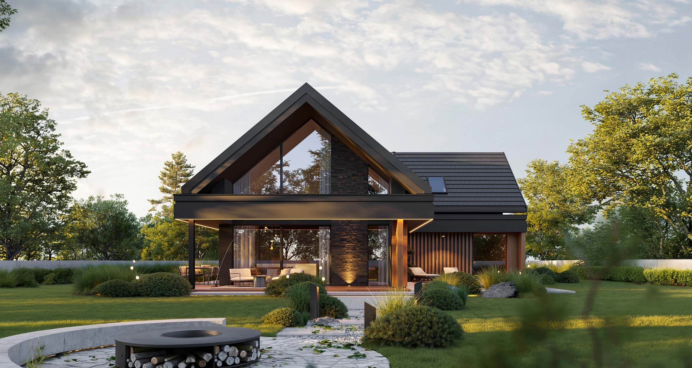
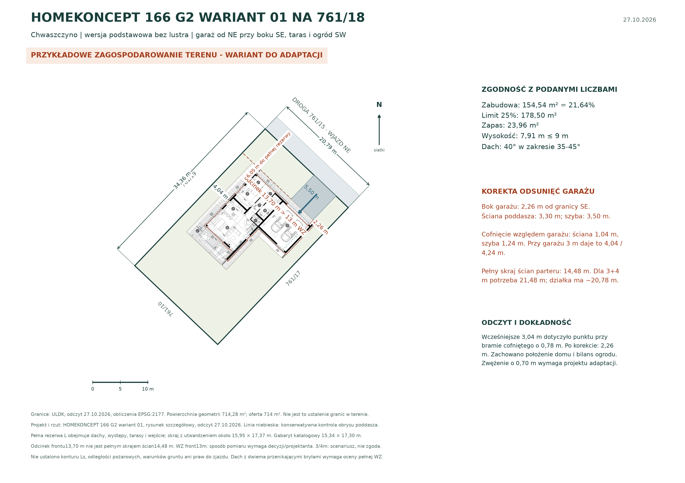
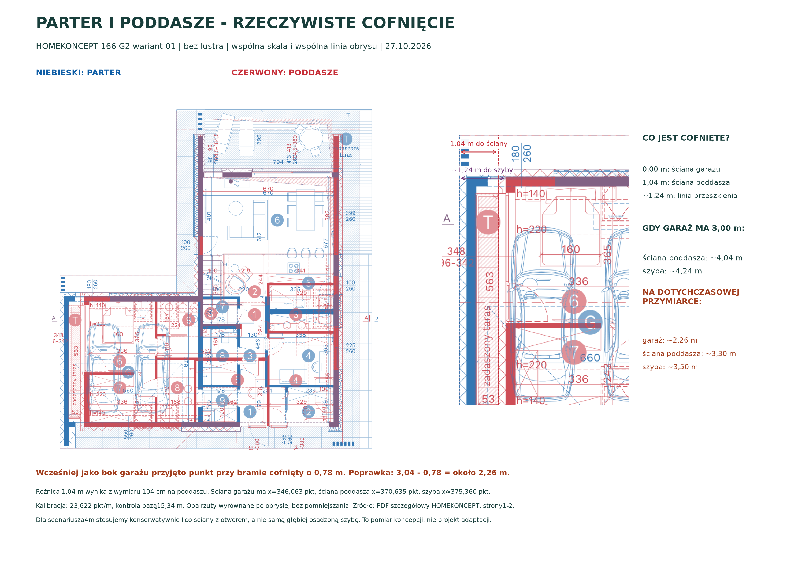
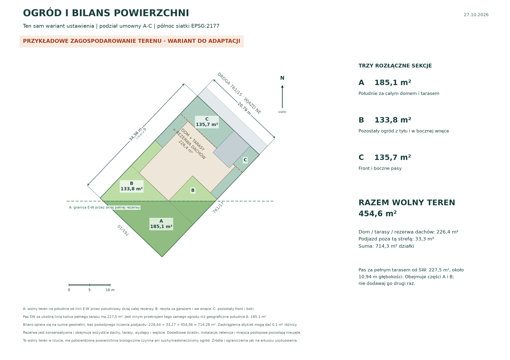

Około 10,94 m głębokości. Części sekcji A i B; nie dodatkowa powierzchnia.
CHWASZCZYNO · DZIAŁKA 761/18
Garaż od drogi.
Garaż od drogi.
Ogród od SW.
Przykładowe zagospodarowanie terenu z projektem HOMEKONCEPT 166 G2 wariant 01, bez lustra. Rzeczywisty parter nałożono w skali na granice działki. Garaż i wejście kierują się na NE, a salon i taras na SW. Układ pokazuje potencjał ogrodu, lecz oryginalny projekt wymaga adaptacji.
220508_5.0004.761/18
Wariant do adaptacji
Poddasze cofnięte.
Poddasze cofnięte.
Garaż wymaga miejsca.
Po nałożeniu obu kondygnacji: ściana poddasza jest cofnięta o 1,04 m, szyba o około 1,24 m względem ściany garażu. Przy garażu 3 m od granicy daje to około 4,04 / 4,24 m. Wcześniejszy pomiar dolnego obrysu wymagał korekty: na pokazanym ustawieniu garaż ma około 2,26 m, nie 3,04 m.
Zobacz rzut i ograniczenia ↓
Na południe od linii E–W przez skraj pełnej rezerwy domu i tarasów.
Po rezerwie domu, dachów, tarasów i podjazdu. Bez potwierdzenia PBC i suchości.
01
Rzut w skali i podjazd od NE
Zachowano skalę i wersję podstawową. Front ustawiono równolegle do granicy drogi 761/15; garaż leży przy boku SE. Pełna konserwatywna rezerwa mieści się w parceli i jest około 6,05 m od granicy drogi. To wybrana przymiarka, a nie dowód najlepszego możliwego ustawienia ani projekt do realizacji.
2,26 mod odtworzonych ścian do boku SE
4,04 mod odtworzonych ścian do boku NW
6,05 mod pełnej rezerwy do granicy drogi

Powiększ rzut ↗
Korekta obrysu i wcześniejszego wniosku o oknie. W
pomiarze pominięto boczny pas garażu szerokości 0,78 m: zamiast 3,04
m od zewnętrznej ściany jest około 2,26 m. Ściana poddasza jest
cofnięta o 1,04 m, a szyba o około 1,24 m. Przy ustawieniu garażu 3
m od granicy przeszklenie może pozostać: lico ściany z otworem ma
około 4,04 m. Potrzebne jest jednak miejsce na cały parter. Pełny
skraj ścian ma około 14,48 m, a nie 13,70 m; ten ostatni wymiar
opisuje odcinek między cofniętymi punktami frontu.
Przyjęty scenariusz
Odległości i właściwy reżim
W scenariuszu 3 m od pełnej ściany garażu i 4 m od przeciwnego boku potrzeba około 21,48 m szerokości (14,48 + 3 + 4 m); działka ma około 20,78 m. Zmniejszenie rzeczywistej szerokości o 0,70 m usuwa nominalny niedobór, lecz pozostawia praktycznie zerowy zapas. Należy zachować cofnięcie ściany poddasza o 1,04 m i zweryfikować rzeczywisty projekt adaptacji. Reguły 3/4 m są założeniem scenariusza; art. 102a PB i właściwy reżim oraz ochronę pożarową musi ocenić projektant.
Schemat dojazdu
Prosty pas szerokości 5,50 m
Podjazd łączy faktyczną bramę z granicą drogi od NE, około 7,39 m dalej. Cały pas pozostaje w działce. Utwardzenie we wnęce garażu liczone jest raz. Nie badano toru jazdy, niwelety, zgody na zjazd ani ciągłości prawnej dojazdu.
02
Parter i poddasze nałożone we wspólnej skali
Niebieski oznacza parter, czerwony poddasze. Oba oryginalne rzuty wyrównano po wspólnym obrysie 15,34 m i dolnej linii budynku. Nie zmieniano skali ani proporcji. Kontrola wektorowa PDF potwierdza cofnięcie ściany poddasza o 1,04 m oraz szyby o około 1,24 m względem zewnętrznego lica ściany garażu.

Powiększ nałożenie ↗| Element | Za ścianą garażu | Garaż ustawiony 3 m od granicy |
|---|---|---|
| Zewnętrzna ściana garażu | 0,00 m | 3,00 m |
| Ściana poddasza z otworem | 1,04 m | 4,04 m |
| Linia przeszklenia | około 1,24 m | około 4,24 m |
Wniosek: cofnięcie może wystarczyć bez likwidacji przeszklenia. Na dotychczasowej przymiarce garaż ma jednak tylko około 2,26 m od granicy, dlatego ściana poddasza ma około 3,30 m, a szyba około 3,50 m. Po zwężeniu domu i prawidłowym ustawieniu pełnej ściany garażu co najmniej 3 m od granicy relacja może być poprawna. Nie jest to jeszcze zatwierdzony projekt zwężenia. Wcześniejszy szacunek zapasu 1,6 cm dla proporcjonalnie pomniejszonej bryły był oparty na niepełnym obrysie parteru i został wycofany.
03
Trzy rozłączne sekcje i pas za tarasem
Cały wolny teren to około 454,6 m². Sekcje A–C sumują się do tej powierzchni i nie nakładają na siebie. Dodatkowy pomiar pasa SW za pełnym tarasem daje około 227,5 m²; obejmuje części A i B, więc nie należy dodawać go ponownie do sumy.

Powiększ ogród ↗| Sekcja | Zakres | Powierzchnia |
|---|---|---|
| A | Ścisłe południe za skrajem pełnej rezerwy | 185,1 m² |
| B | Pozostały ogród z tyłu i w bocznej wnęce | 133,8 m² |
| C | Front i boczne pasy | 135,7 m² |
| Cały wolny teren · A–C | 454,6 m² | |
Południe A: 185,1 m². Wyznacza je linia E–W w EPSG:2177 przechodząca przez najbardziej południowy punkt całej rezerwy domu, dachów i tarasów. Pas SW: 227,5 m², około 10,94 m głębokości. Leży za końcem pełnego tarasu, równolegle do ukośnej tylnej granicy. Te dwie liczby opisują różne fragmenty tego samego wolnego terenu.
| Przeznaczenie | Powierzchnia |
|---|---|
| Rezerwa domu, dachów, tarasów i wejścia | 226,44 m² |
| Podjazd poza powyższą rezerwą | 33,27 m² |
| Wolny teren A–C | 454,56 m² |
| Razem · geometria parceli | 714,28 m² |
Suma wynika z wartości niezaokrąglonych; etykiety mogą różnić się o 0,1 m². Pełna rezerwa ma kształt L i obejmuje dachy, występy oraz komplet utwardzeń widocznych na rzucie. Nie jest katalogową powierzchnią zabudowy. Dodatkowe ścieżki, instalacje, retencja i miejsca postojowe pozostają nieujęte. Wolny teren nie jest potwierdzonym suchym, nasłonecznionym ogrodem ani bilansem PBC.
04
Projekt i parametry przekazanej WZ
| Projekt i wersja | HOMEKONCEPT 166 G2 wariant 01 · podstawowa, bez lustra |
|---|---|
| Powierzchnia użytkowa / garaż | 144,00 / 40,88 m² |
| Katalogowa powierzchnia zabudowy | 154,54 m² |
| Udział w nominalnych 714 m² | 21,64% |
| Deklarowane WZ · limit 25% | 178,50 m² · zapas 23,96 m² |
| Wysokość / podany limit | 7,91 / 9 m |
| Nachylenie dachu / podany zakres | 40° / 35–45° |
| Zwymiarowany odcinek frontu / podany limit | 13,70 / 13 m · przekroczenie 0,70 m |
| Pełny skraj ścian parteru | około 14,48 m · obejmuje pas garażu 0,78 m |
| Gabaryt katalogowy | 15,34 × 17,30 m |
| Skraj pełnej rezerwy z utwardzeniami | około 15,95 × 17,37 m · obwiednia L |
Powierzchnię zabudowy porównano z 25% nominalnych 714 m²; bilans ogrodu liczono od geometrii 714,28 m². Rzut kalibrowano na wektorach PDF autora, około 23,622 punktu na metr. Nie pomniejszano projektu. Odtworzony obrys parteru i konserwatywna kontrola poddasza służą sprawdzeniu usytuowania; ich pola nie zastępują katalogowej zabudowy 154,54 m².
Pełna WZ pozostaje warunkiem oceny. 25% zabudowy, 6
m od drogi, 9 m wysokości, dach dwuspadowy 35–45° i front do 13 m
przekazano do analizy bez decyzji oraz mapy. Sama zgodność wysokości
i kąta nie potwierdza zgodności dwóch przenikających brył dachów.
Potrzebna jest interpretacja pełnej decyzji oraz rozwiązanie
konfliktu szerokości. Wymiar 13,70 m jest odcinkiem na rzucie; pełny
skraj ścian parteru wynosi około 14,48 m. Sposób ustalenia elewacji
frontowej wymaga pełnej decyzji i projektanta.
05
Źródła i pozostałe weryfikacje
Opracowanie, odczyt źródeł projektu i geometrii oraz publikacja: 27.10.2026. Zakres tej podstrony obejmuje przymiarkę domu i bilans terenu. Grunt, media, prawa do drogi i jeziora oraz cena są opisane w osobnej analizie działki 761/18.
Parametry i wizualizacja katalogowa wersji podstawowej bez lustra. Autor projektu i ilustracji: HOMEKONCEPT. Obraz nie przedstawia zagospodarowania rzeczywistej parceli.
Źródło parteru w skali, położenia bramy, tarasów, przeszklenia poddasza i wymiarów. Rysunek koncepcyjny nie jest dokumentacją techniczną.
Kontrola wyboru wersji podstawowej. Pełne materiały źródłowe pozostają pod adresem pracowni; w Atlasie są wybrane opracowania.
Geometria odczytana 27.10.2026, przeliczona do EPSG:2177. Nie zastępuje ustalenia granic w terenie ani aktualnego wypisu EGiB.
Przepis przejściowy dotyczący stosowania dawnych zasad po oświadczeniu inwestora. Odległości 3/4 m na rysunku są scenariuszem wymagającym doboru reżimu i kontroli projektu.
Przed wyborem projektu: pełna skuteczna WZ z mapą,
adaptacja szerokości i usytuowania, zachowanie cofnięcia ściany
poddasza, kontrola obrysów obu kondygnacji, okapów, tarasów i
ochrony pożarowej. Nadal potrzebne są właściwy kontur Ls i odległość
od lasu, geodezyjne granice, projekt zjazdu oraz rozpoznanie gruntu
i wody. Przymiarka nie jest PZT ani potwierdzeniem dopuszczalności
budowy.